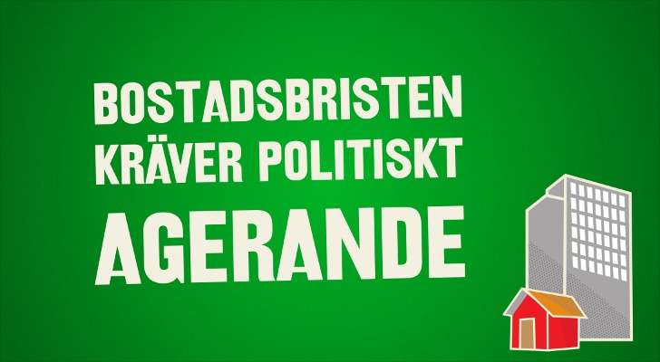

Följ oss som det passar dig
Miljöpartiet finns självklart både på Facebook och Twitter. Dessutom har vi flera RSS-flöden som kanske passar just dig.
Miljöpartiet finns självklart både på Facebook och Twitter. Dessutom har vi flera RSS-flöden som kanske passar just dig.
Miljöpartiet vill modernisera Sverige. Vi vill skapa ett hållbart samhälle, som möter klimatutmaningen och dessutom ger nya jobb.
Klimatförändringarna är vår tids största utmaning. Vi vill investera i hållbara lösningar, som möter klimatutmaningen och skapar nya jobb.
Miljöpartiet vill skapa ett Sverige där alla är välkomna; oavsett var du kommer ifrån, vem du älskar eller om du har någon funktionsnedsättning. Ett samhälle som ger upp att vara bra för alla är snart inte bra för någon.
Många saknar jobb i Sverige, inte minst ungdomar. Vi behöver en politik som verkligen skapar nya jobb. Den utmaningen är vi beredda att ta tag i.
Miljöpartiet vill ha en skola som präglas av hög kvalitet och pedagogisk mångfald. Vi vill skapa förutsättningar för olika profiler och inriktningar, där varje elev får möjlighet att utvecklas.
Läs mer om hur vi vill modernisera Sverige
Vi finns i hela landet och driver grön politik på din gata. Klicka på knappen så får du se:
Miljöpartiet de gröna är Sveriges tredje största riksdagsparti. Vi är med och styr i över hundra kommuner och landsting. Vi moderniserar Sverige.
Våra språkrör Istället för partiledare har vi två språkrör som för ut vår politik.
Politik angår oss alla. Genom att vara öppna för andras idéer kan vi utveckla den gröna politiken. Därför vill vi höra vad du tycker.
Det behövs en bred uppgörelse om långsiktighet i energipolitiken! Vad säger Miljöpartiet?
E.ON Sverige (@EON_Nordic) på twitter
Vi håller med. Vi har föreslagit samtal över blockgränserna om energipolitiken. Det finns en riksdagsmajoritet för 100% förnybar energi, men regerings fastlåsning hindrar tydliga beslut.
Lise Nordin, energipolitisk talesperson för Miljöpartiet